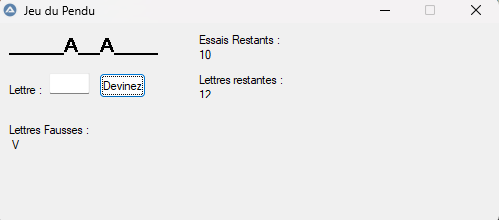

Classe inversée
Ce projet est une présentation d’un langage, d’une technologie a la classe si possible quelque chose vu en stage . J'ai donc présenté Autoit vu en stage de 2ème année.
Outils utilisés
Word SciTE
Compétences abordées
B1-6 : Organiser son développement professionnel
Tâches
TP
Réalisation d'un pendu
